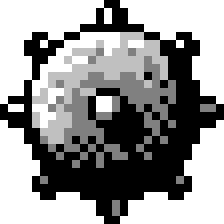
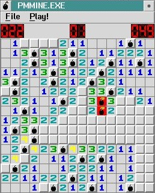
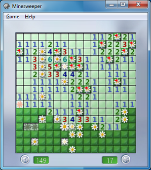
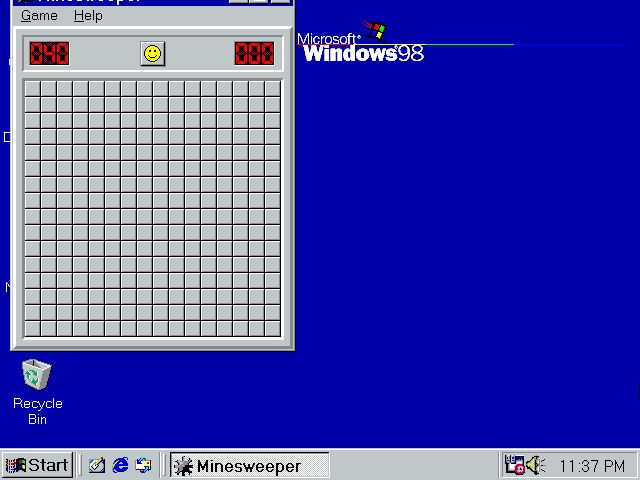
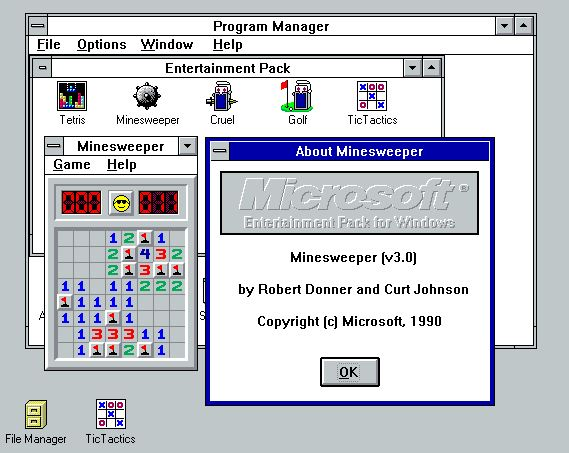
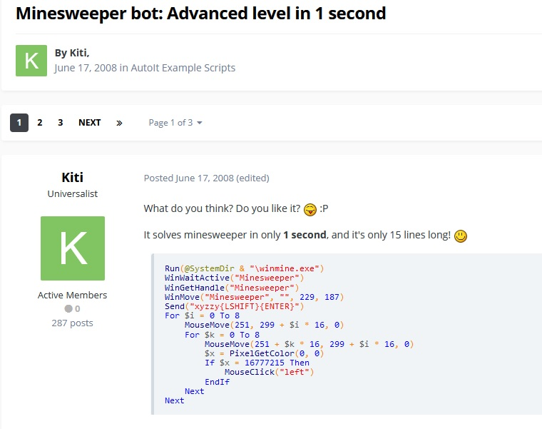

Saper: Historia i Ciekawostki

Pierwsza wersja sapera
na IBM 2.0

Flower Field

Okno które przesunęło się za wysoko
przez zmienianie ustawień

Windows Entertainment Pack

Przykład programu używającego kodu xyzzy
żeby wygrać
Poprzedni rekord świata ustalony przez
Kamila Murańskiego